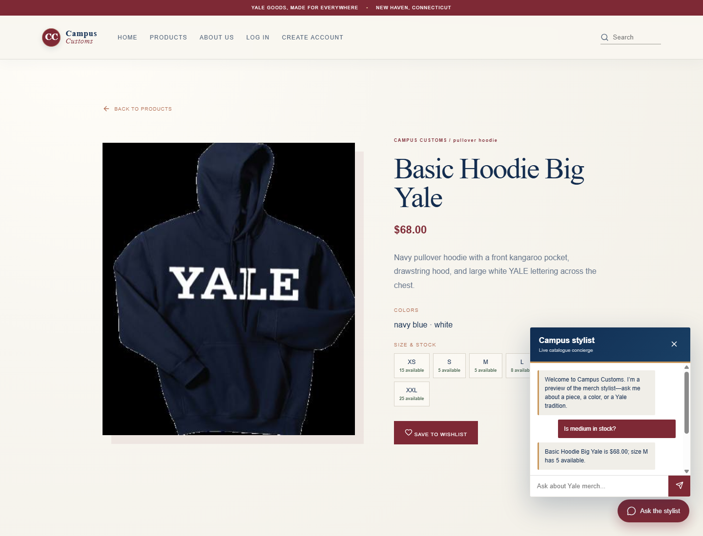
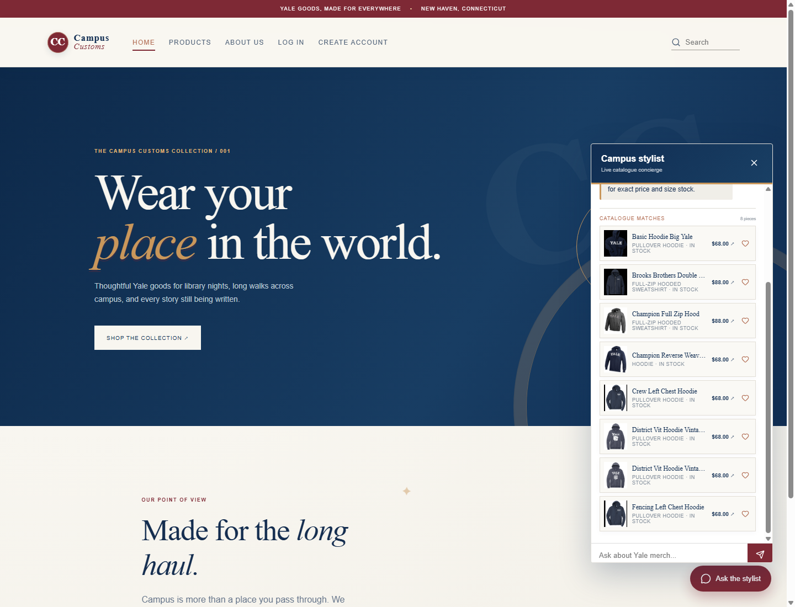
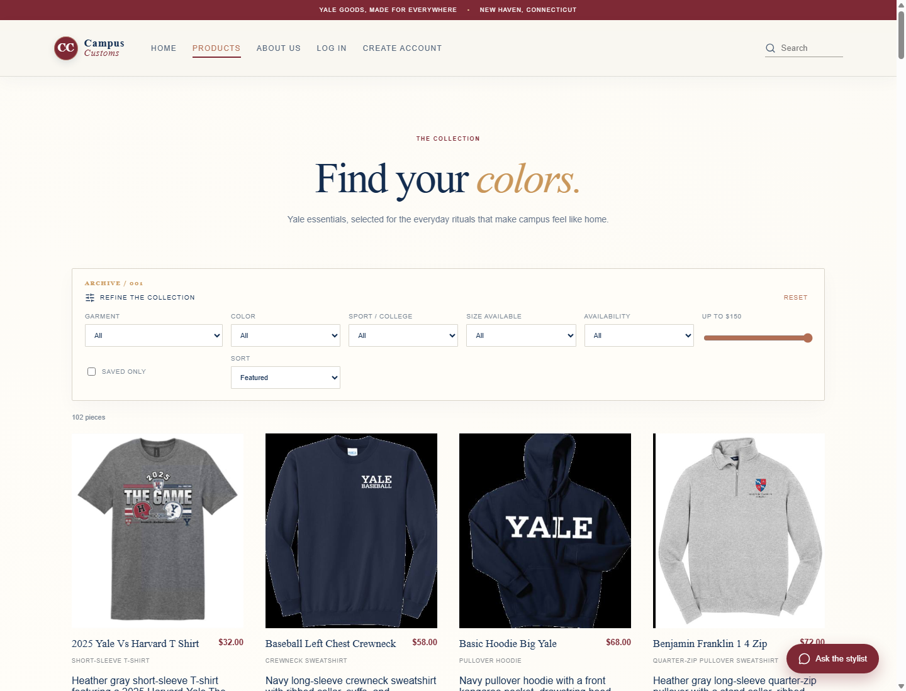

Evidence captured from the running React/Vite storefront at http://127.0.0.1:5174/ with FastAPI on port 8000.
Three checks captured successfully
1. Chat checks inventory honestly
The shopper is viewing the Basic Hoodie Big Yale detail page and asks, “Is medium in stock?” The response shows the database-backed price of $68.00 and the exact size-M quantity of 5 available.

Inventory check: the product detail, size grid, and stylist response agree on the product, price, and medium quantity.
2. Category question creates dynamic result cards
The shopper asks, “What hoodies do you have?” The chat displays eight catalogue matches with product images, names, garment types, prices, stock labels, and save controls.

Dynamic search check: the response becomes a scrollable catalogue-match strip inside the live chat panel.
3. Frontend usability: product discovery filters
The Products page exposes garment, color, sport/college, size, availability, price, saved-only, and sorting controls above the 102-piece catalogue. This lets a shopper narrow the collection before opening a product detail page.

Discovery check: the live Products page presents the refinement panel and the catalogue together, with visible count, images, prices, and product cards.